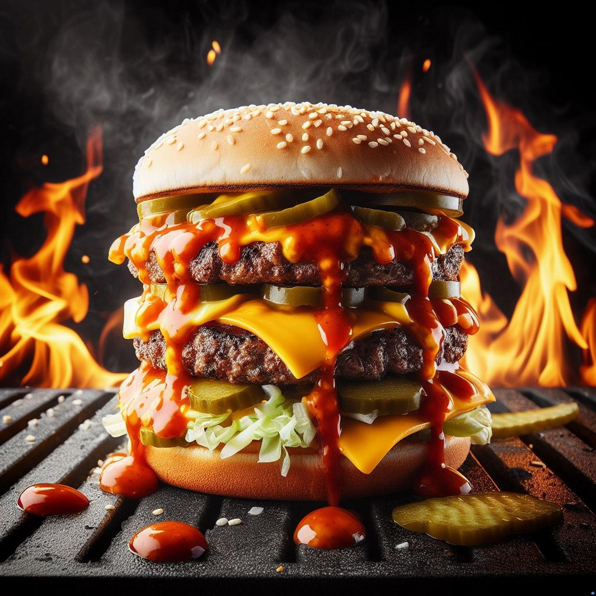

Hamburger Recipe

Description
For a simple, short hamburger recipe, the key is using 80/20 ground beef (80% lean, 20% fat) for maximum juiciness.
Ingredients
- 1 lb (450g) Ground beef (80/20 blend)
- 1 tsp Salt
- 1/2 tsp Black pepper
- 1 tbsp Worcestershire sauce for a flavor boost (optional)
Steps
- Form Patties: Divide the beef into 4 equal portions. Gently shape them into rounds about ¾-inch thick.
- The "Dimple" Trick: Press your thumb into the center of each patty to create a small dent. This prevents the burger from puffing up into a dome while cooking.
- Season: Generously sprinkle both sides of the patties with salt and pepper.
- Cook: Heat a skillet or grill over medium-high heat. Cook for 3–5 minutes per side.
- Tip: Do not press down on the patties with your spatula, as this squeezes out the juices.
- Finish: If using cheese, add a slice during the last minute and cover the pan with a lid to melt it.
Tip:
Let the burgers rest for 3–5 minutes before serving on toasted buns with your favorite toppings.
Home